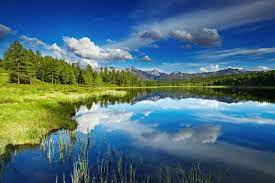

|  | |
¡Bienvenido a nuestra sección de paisajes hermosos! Aquí encontrarás una colección cuidadosamente seleccionada de escenas naturales que te transportarán a lugares de ensueño. Desde majestuosas montañas cubiertas de nieve hasta exuberantes selvas tropicales, pasando por serenos lagos y playas doradas, cada imagen captura la esencia y la belleza única de nuestro mundo. Sumérgete en la tranquilidad de la naturaleza y deja que estos paisajes te inspiren y te llenen de asombro. ¡Disfruta de la maravillosa vista que la madre naturaleza tiene para ofrecerte!